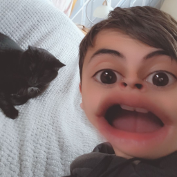

GitHub
GitLab
Instagram
Last.fm
PayPal
Reddit
Spotify
Alternative Spotify Account
Steam
Steam 2
Telegram
Threads
TikTok
Twitch
Gravatar
Follow on X
YouTube
Homelab Setup (soon)
Email Us (noreply)
Email Us
Andrey (aka Queazified)
Home Lab Nerd | Ex Content Creator | 🇬🇧 🇷🇴 | Professional "Smart Ass"
DiscordGitHub
GitLab
Last.fm
PayPal
Spotify
Alternative Spotify Account
Steam
Steam 2
Telegram
Threads
TikTok
Twitch
Gravatar
Follow on X
YouTube
Homelab Setup (soon)
Email Us (noreply)
Email Us
Privacy Policy | Made with 🩵 by Queazified.